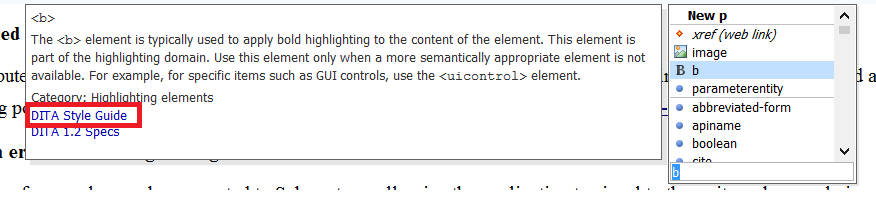

Implementing your own Style Guide
Let's say you are a team of tech writers collaborating on a DITA-based project and doing things your way, maybe you have various best practices about what elements to use and when to use them, maybe you want to impose a set of controlled values for certain attributes. So at some point you gather on an internal server a set of HTML resources which explain how various DITA elements should be used. This blog post will attempt to show you how these best practices can be shared with your team so that they are readily available when editing DITA content in Oxygen.
Custom "Style Guide" toolbar button
As you have your style guide HTML resources on a server, you can add a custom toolbar button which will appear on the DITA toolbar when editing DITA topics in the Author editing mode. When you press that toolbar button, a web browser opens up and shows you the style guide main page. Here are some steps about how to do this:
- In the Oxygen Preferences->Document Type Association page edit the DITA framework. Instead of editing the DITA framework directly you may choose to extend it in order to share the extension more easily:Document Type Extension Sharing.
- In the Author tab go to the Actions tab and there is an action with the ID styleguide. If you edit the action, it invokes an operation with a parameter called resourcePath. You can edit that parameter to point to your internal (or public) server where the WebHelp output is stored. You should also set an icon to it, you can use /images/BrowseReferenceManual16.png (it's a default icon which comes with Oxygen). Save your changes in that dialog.
- In the Author tab there is a Toolbar sub-tab in which you can add the styleguide action to the toolbar in the place where you want it. Press OK a couple of times in the dialogs and then action should become available on the toolbar for each topic.
Link to Style Guide for each element in the content completion window
When you press the ENTER key in the Author editing mode, you get a list of available elements. For each element there is documentation available, that documentation can be customized, for example you could add links for each element to a specific section in your style guide. This topic should tell you more about how this can be achieved:https://www.oxygenxml.com/doc/ug-editor/#tasks/author-styleguide-annotations.html
Impose controlled attribute values
For certain attributes (for example profiling attributes, @outputclass attributes) you may want to impose a set of controlled attribute values. This blog post will tell you how: Controlled Attribute Values for your DITA Project.
Show validation errors or warning when guidelines are breached
If possible, some of your rules can be converted to Schematron, allowing the application to signal to the writer when a rule is not obeyed. You can also add quick fixes to show writers various ways to rectify the problem. This blog post should give you more details about this:Schematron Checks to help Technical Writing.
Bringing all of this together
There is an Oxygen XML GitHub project called DIM which attempts to approach most of these aspects in an unified manner: https://github.com/oxygenxml/dim.